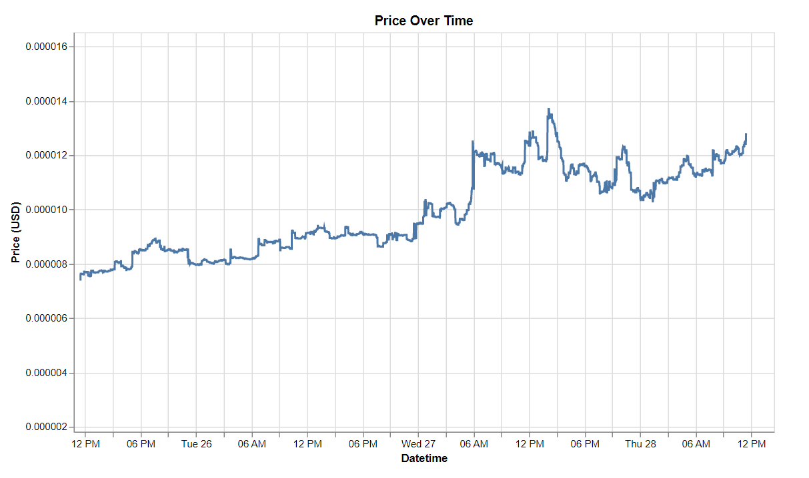
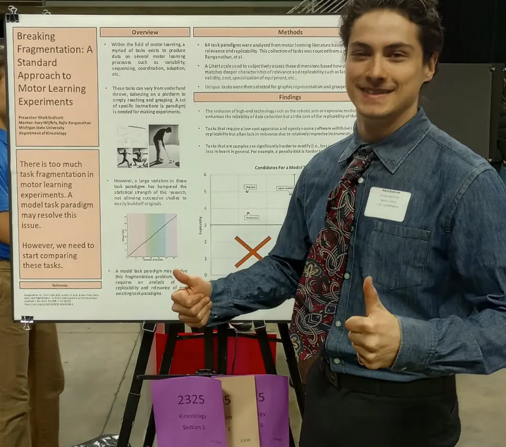
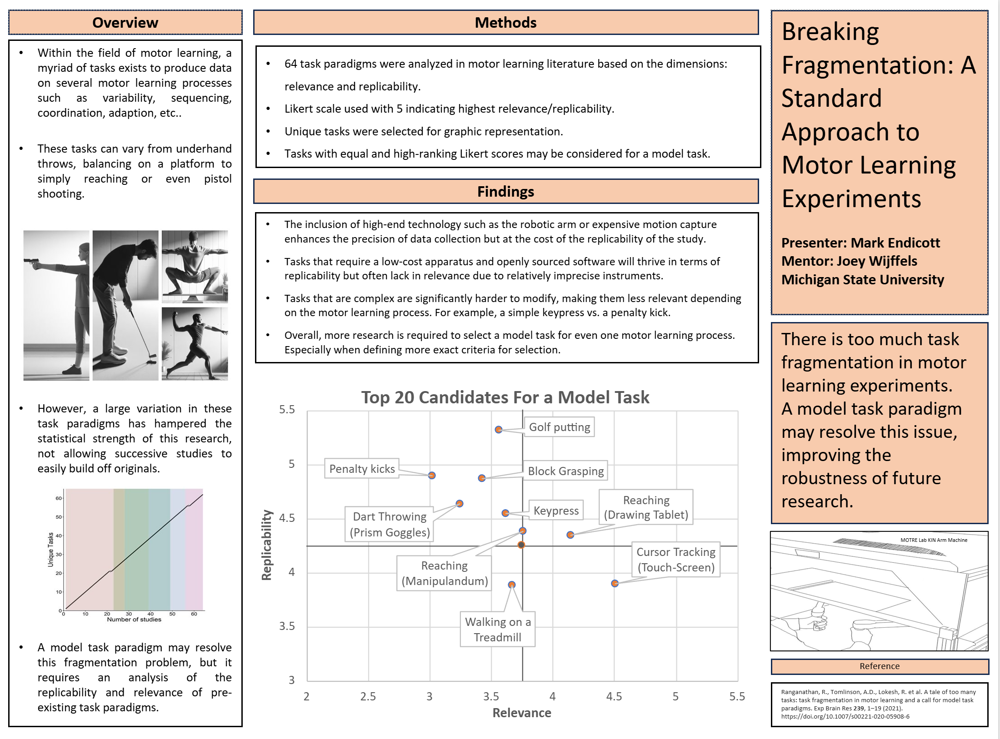

Data science student with hands-on experience building dashboards, analyzing data, and coordinating multi-stakeholder projects.
Demonstrated ability to translate ambiguous requirements into clear metrics, timelines, and actionable insights.
Proficient with Python (pandas, polars, NumPy), R (tidyverse), Excel, Power BI/Tableau, and SQL. Proven track record managing
30+ projects and delivering data-driven solutions across research, finance, and analytics domains.
Skills
Programming & Analysis
- Python (pandas, polars, NumPy)
- R (tidyverse, data.table)
- SQL (basic queries)
- Git/GitHub version control
Data Tools & Platforms
- Power BI / Tableau
- Excel / Google Sheets
- API data extraction
- Data wrangling & preprocessing
Project Management
- KPI/OKR design
- Timeline & risk tracking
- Stakeholder coordination
- Documentation & reporting
Featured Projects
Interactive "ChainSight" Dashboarding & MAPE Tracking
September 2025 | MSU Broad Datathon
- Prototyped interactive Power BI dashboard for Connected Midland's "ChainSight" supply chain platform
- Implemented DAX KPIs (on-time %, delay counts, forecast error/MAPE) with slicers, parameter controls, and bookmarks
- Proposed lightweight data-validation rubric and weekly refresh to improve trust and user adoption
LLM Framework for Rare Disease Mechanism Mapping
March 2025 | Harvard Rare-Disease Hackathon
- Collaborated in 5-person team to develop LLM-based tool classifying gene-disease mechanisms and matching therapies
- Streamlined pre-IND drug discovery through automated data extraction and analysis
Apollo Housing Management: Financial & Task Analytics
Ongoing | October 2024 – Present
- Collaborated with SHC treasurer to analyze fair market rent as proxy for housing affordability
- Produced dashboards tracking financial trends, utility usage, and chore adoption across 18-member home
- Delivered 1 R-Markdown report to Spartan Housing Cooperative with data-driven insights for operational improvements
Algorithmic Trading Data Pipeline
2024 | Independent Project with Senior Developer Mentorship
- Built modular cryptocurrency trading bot in Python with ETL pipelines for data ingestion via REST/WebSocket APIs
- Implemented feature engineering, backtesting, and strategy "harness" for rapid A/B prototyping
- Managed data structures/pipelines for reliability and speed in high-volatility markets
Granular Price Data Using Vega-Altair:

Project Artifacts:
Note: The backtester code is an example draft, not the production code used.
Breaking Fragmentation: A Standard Approach to Motor Learning
March 2024 | Presented at UURAF
- Evaluated 64 motor learning tasks on reproducibility, scalability, and experimental rigor using Likert-scale metrics
- Performed analysis and visualization in Excel; synthesized findings into standardized framework
- Presented poster at MSU's Undergraduate Research and Arts Forum
Final Poster Draft:

Precursor Draft:

Project Artifacts:
Experience
Finance & Project Officer
Spartan Housing Cooperative (Apollo) | East Lansing, MI
February 2023 – September 2025
- Managed budgets, audits, and reconciliation for 18-member co-op using Excel/Google Sheets; produced bi-monthly financial reports
- Coordinated 30+ projects end-to-end, tracking timelines and outcomes; built dashboards in Tableau for operational insights
- Standardized meeting documentation and served as primary liaison with SHC leadership
Personal Training Intern
State of Fitness | East Lansing, MI
May 2024 – July 2024
- Completed 170 hours of guided training practice; assisted with customized workout plans and client progress tracking
- Supported fitness sessions focused on strength, mobility, and endurance training
Research Assistant
MOTRE Lab, Michigan State University (PI: Dr. Rajiv Ranganathan) | East Lansing, MI
January 2023 – April 2024
- Evaluated 64 task paradigms using Likert-scale assessment; extracted and analyzed datasets with Excel
- Presented results at UURAF; synthesized findings into standardized framework
- Supported design and piloting of graduate-level motor learning studies
Food Service Team Member
Noodles & Company | East Lansing, MI
July 2022 – March 2023
- Prepared 50+ meals per shift with consistent attention to quality, timing, and food safety standards
- Collaborated with team to streamline workflow, reducing prep time and food waste
Grant Analyst Intern
Biovate LLC | Cambridge, MA (Remote)
May 2020 – August 2020
- Analyzed NIH RePORTER data across 100+ biotech firms using Excel to identify funding trends
- Built weekly PowerPoint reports with data visualizations informing strategic biotech outreach
Food Service Team Member
Texas Roadhouse | Grand Junction, CO; Cheyenne, WY; Flint, MI
June 2018 – January 2021
- Delivered high-quality service across multiple roles (busser, server, food runner) serving 200+ guests per shift
- Trained and onboarded new staff, maintaining consistent service standards across locations
Education
Bachelor of Science, Data Science
Michigan State University | East Lansing, MI
Expected December 2026 | GPA: 3.25/4.0
Minor: Information Technology
Technical Courses:
- Computational Modeling & Data Analysis I & II (CMSE 201, 202)
- Probability & Statistics for Data Scientists (STT 380)
- Algorithms & Data Structures (CSE 331)
- Introduction to Data Science (STT 180)
- Matrix Algebra I (MTH 314)
Associate of Science, Life Sciences
Mott Community College | Flint, MI
Graduated 2022 | GPA: 3.8/4.0
Certifications
- Google Project Management Professional Certificate – November 2024
- NASM Certified Personal Trainer (CPT) – January 2018